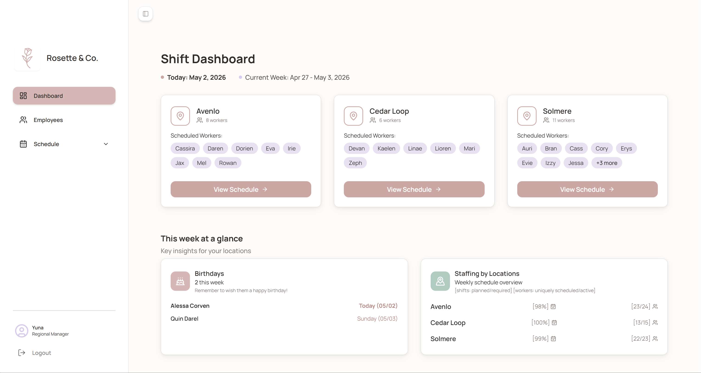
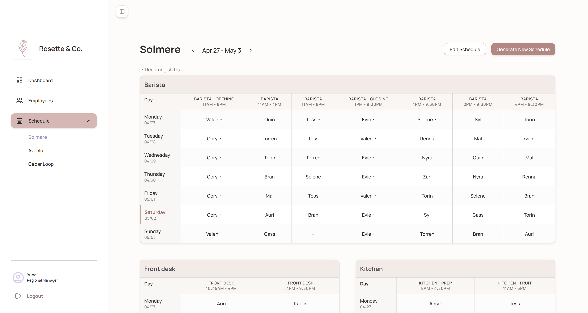

PRODUCT BUILD
Orvia
A week of retail shifts is a constraint-satisfaction problem. Most scheduling software gives you a better spreadsheet. Orvia generates the answer.
The problem
Retail managers at small and mid-size shops spend hours each week building shift schedules by hand — cross-referencing employee availability, role requirements, contractual hour caps, and fairness across the roster. Every week, from scratch. It is a solved problem that is still being solved manually because the tools available are either a spreadsheet or an enterprise system with a five-figure annual contract.
Orvia is a shift scheduling system built for regional managers overseeing multiple locations. The interface is simple. The scheduling logic runs entirely in the browser.
Built for
A friend managing three retail locations who was spending around three hours a week hand-editing schedules in Google Sheets. Orvia generates a full seven-day schedule across her stores in a couple of seconds, and scales to any roster size and any number of locations she configures in Supabase.

Regional manager dashboard — three locations, current-week staffing coverage at a glance
Decisions that mattered
The obvious product is a grid you fill in manually. Click a slot, assign a worker, move to the next cell. It's familiar, learnable, and completely manual.
Orvia does more. "Generate New Schedule" runs the constraint algorithm in the browser and fills the entire week at once. Individual slots stay editable afterward: click a cell, a dialog opens to reassign the worker or adjust the time window. The default path starts from a complete schedule rather than a blank one, and the manager's job becomes reviewing and correcting instead of building from scratch.
For manual edits, the default pattern is drag-and-drop. A tray of employee name pills sits on one side, slots on the other, and you drag the right person into the right cell. It's direct and tactile, and it breaks the moment the roster grows past a dozen people. With fifty employees, finding the right name pill becomes its own cognitive load, and the manager ends up scanning a wall of names to swap a single shift.
Orvia uses a modal instead. Click a slot, a dialog opens with a search field, type two letters of a name. The modal adds a layer of interface complexity, and it's still the right call. Typing two letters always beats scanning fifty pills.

Cedar Loop — generated weekly schedule by role, with the success notification confirming one-click generation
How I built this
Started with a half-formed idea: automate the boring half of shift scheduling and leave the human half to the human. Stack came first. I talked through options with Cursor before writing any code, and picked Supabase because one platform handling auth, database, and row-level security meant fewer integration points to manage as a solo dev.
Schema design was where AI helped the most. Multi-location scheduling has a lot of connected tables — employees, locations, role assignments, shift templates, availability windows, generated schedules — and getting the relationships right matters, because a wrong foreign key two weeks in becomes painful to migrate around. I described the requirements and the scenarios I needed to support, and the model returned schema proposals I could iterate on faster than I'd have built from scratch. That's the part of solo full-stack work that scales least with experience, and the place AI compressed it the most.
The scheduling logic was the opposite story. I wrote out every rule in plain text — hour caps, role coverage, fairness, contractual constraints — and the model translated it into Supabase edge functions and browser scripts. It took weeks to fine-tune, because business rules and people rules don't generalize cleanly. Every manager has a "this employee can't open on Tuesdays because of school pickup" exception, and trying to encode all of it produced brittle logic that broke in new ways each time I added a constraint. The call I made was to stop coding for every corner case and unload some of the work to the manager. More manual editing than a perfect generator would require, and a lot less than untangling a confidently wrong schedule. Better to be obviously partial than confidently wrong.
The frontend moved fastest. I sketched a mid-fidelity layout, screenshotted it to the model, and went straight to implementation. No handoff, no spec, just self-iteration on the design as I built it. AI didn't help with the small visual things that still need a human eye: padding, shadow weight, alignment quirks, and the motion details that make an interface feel good rather than functional. None of that is necessary for the tool to work. All of it is necessary for it to feel like something a manager would actually want to open on a Sunday night.
What I built
Designed and engineered end-to-end. Frontend in Next.js and TypeScript, data and auth in Supabase (PostgreSQL + Edge Functions + RLS). The scheduling algorithm itself runs in the browser — constraint logic in JavaScript, no server round-trip required for generation.
- Multi-location dashboard: regional managers see all their stores at a glance, with current staffing percentages and active worker counts per location
- Per-location schedule view: a weekly grid by role and shift type, navigable across weeks with prev/next controls
- Employee and role management: roster management with availability windows, role assignments, and hour constraints that feed directly into the generation algorithm
- Weekly context panel: staffing coverage percentages by location, plus upcoming employee birthdays — a small detail that matters in small teams where managers track this manually today